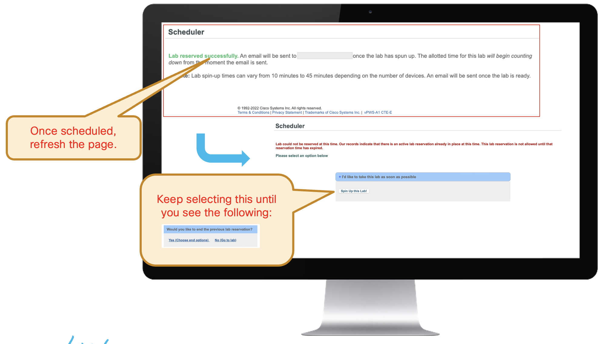

The Lab! - Launching
Tip
The estimated time to Spin Up each Lab is 5 Minutes.
1. Lab – Choose Lab
Select the Lab you wan to spin-up and Launch.
2. Lab - Reserve
Reserve a Lab and Spin-Up this Lab!.
3. Lab – Spin Up
Once scheduled, refresh the page. Keep selecting this until you see the following:
4. Launching
Finally, Go to the Lab
5. Lab - End or Changing Lab
End your session once you complete a lab. End Session then Exit.
Tip
You cannot spin-up another lab until you end any running lab. You can now spin-up another lab.